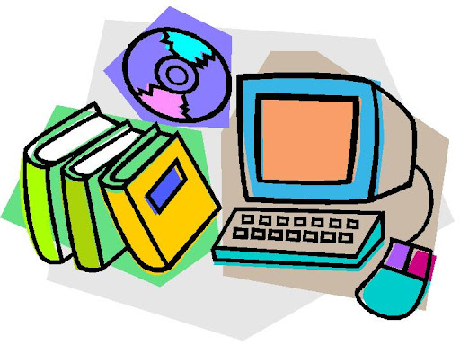
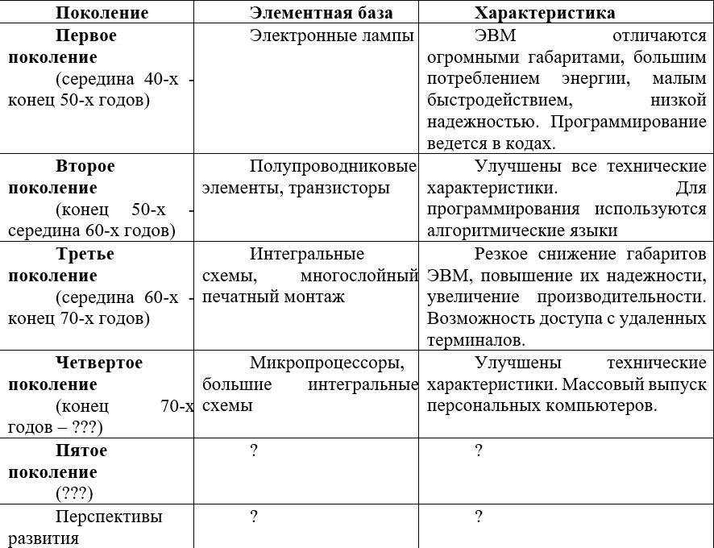
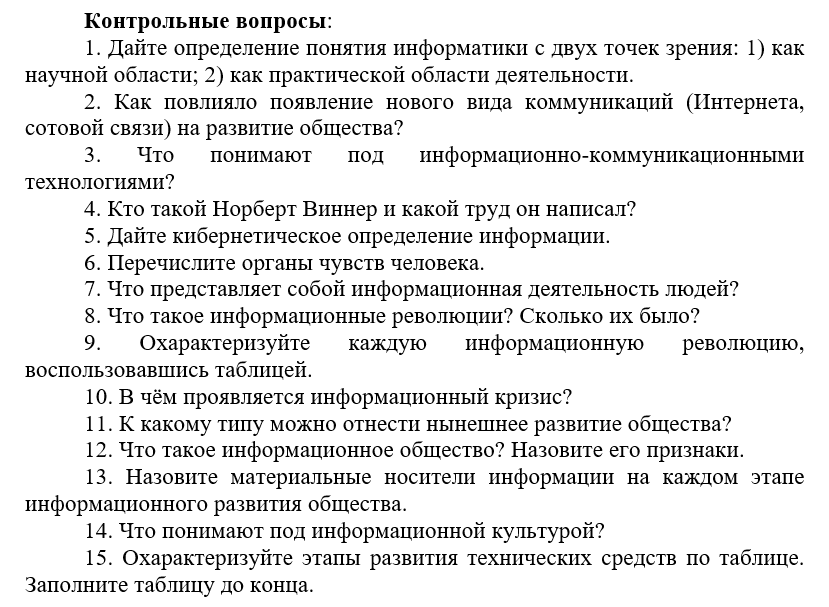

Обобщение
-
Информатика – это наука об информации и информационных процессах, протекающих в различных системах, а также о способах их автоматизации с использованием компьютерной техники.

В последние годы в информатике сформировалось новое направление, которое называют социальной информатикой. Связано это с широким внедрением в жизнь компьютерных технологий и современных средств информационных коммуникаций
(от лат. «communicatio» — что означает сообщение, передача и от «communicare» — делать общим, беседовать, связывать, сообщать, передавать), таких как Интернет, сотовая связь, что оказывает всё более сильное влияние на общество в целом и на каждого отдельного человека. Общественное развитие движется к своей новой ступени – к информационному обществу.
В материальном производстве под технологией понимается совокупность методов производства, обработки, изменения свойств, формы и состояния вещества или энергии.
Под информационными и коммуникационными технологиями (ИКТ) понимается совокупность средств и методов (способов), разработанных на основе использования достижений вычислительной и коммуникационной техники, обеспечивающей автоматическую обработку информации и повышение эффективности профессиональной деятельности человека.
Одним из основных понятий дисциплины Информатика, которое очень часто применяется представителями различных научных дисциплин и направлений, является понятие "информация". Несмотря на широкое использование как в бытовом, так и на профессиональном уровнях понятия "информация" (information от латинского informatio - разъяснение, осведомление) дать полное и однозначное его определение достаточно сложно. Подробнее мы остановимся на следующих занятиях.
Норберт Виннер (американский учёный, выдающийся математик и философ, основоположник кибернетики и теории искусственного интеллекта) в своём труде «Кибернетика, или Управление и связь в животном и машине» пишет, что информация есть «обозначение содержания, полученного из внешнего мира в процессе нашего приспособления к нему наших чувств». Таким образом,
Иформация — это сведения, знания, сообщения, которые человек воспринимает из внешнего мира через органы чувств (зрение, слух, вкус, обоняние, осязание).
Теперь можно определить, что включает в себя информационная деятельность людей:
• восприятие данных (сведений) из внешнего мира;
• переработка их в информацию;
• использование информации для принятия решений о своих последующих действиях в быту, на производстве, в социальных отношениях, в том числе действиях, связанных с дальнейшим познанием и преобразованием действительности.
На заре цивилизации человеку было достаточно элементарных знаний и первобытных навыков. По мере развития общества участие в информационных процессах требовало уже не только индивидуальных, но и коллективных знаний и опыта, способствующих правильной переработке информации и принятию необходимых решений. Для этого человеку понадобились различные устройства.
Этапы появления средств и методов обработки информации, вызвавших кардинальные изменения в обществе, определяются как информационные революции. При этом общество переходит на более высокий уровень развития и обретает новое качество. Информационные революции определяют переломные моменты во всемирной истории, после которых начинаются новые этапы развития цивилизации, появляются и развиваются принципиально новые технологии.
Этапы развития человечества
Таблица 1
Ускорение накопления общего объёма знаний происходит с удивительной быстротой. В начале XX века общий объём всей производимой человечеством информации удваивался каждые 50 лет, к 1950 году удвоение происходило каждые 10 лет, а к концу XX века – уже каждые 5 лет, и это не предел. Таким образом, ещё с начала XX века стало заметным проявление явления, которое можно назвать информационным кризисом. Он проявляется в следующем:
- информационный поток превосходит ограниченные возможности человека по восприятию и переработке информации;
- возникает большое количество избыточной информации («информационный шум»);
- затрудняет восприятие полезной для потребителя информации;
- укрепляются экономические, политические и другие барьеры, которые препятствуют распространению информации (например, по причине секретности).
Проблема решения выхода из информационного кризиса комплексная и решается усилиями как каждой страны, так и мирового сообщества в целом.
Накопленный к сегодняшнему дню колоссальный информационный потенциал и появление новых информационных и коммуникационных
технологий (ИКТ) изменили социально-экономический характер современного общества. Если до середины ХХ века общество имело ярко выраженный индустриальный характер, то нынешнее его состояние ученые характеризуют как постиндустриальное, рассматривая его в качестве переходного к информационному обществу.
Информационное общество — общество, в котором большинство работающих занято производством, хранением, переработкой и реализацией информации, особенно высшей её формы — знаний.
В информационном обществе изменятся не только производство, но и весь уклад жизни, система ценностей, возрастёт значимость культурного досуга по отношению к материальным ценностям. По сравнению с индустриальным обществом, где все силы направлены на производство и потребление товаров, в информационном обществе производятся и потребляются в основном интеллект и знания, что приводит к увеличению доли умственного труда.
Признаки информационного общества:
- решена проблема информационного кризиса, т.е. противоречие между информационной лавиной и информационным голодом;
- обеспечен приоритет информации по сравнению с другими ресурсами;
- информационная технология приобретет глобальный характер, охватывая все сферы социальной деятельности человека;
- формируется информационное единство всей человеческой цивилизации;
- с помощью средств информатизации реализован свободный доступ каждого человека к информационным ресурсам всей человеческой цивилизации.
Ближе всех на пути к информационному обществу стоят страны с развитой информационной индустрией: США, Япония, Англия, Германия, страны Западной Европы.
В период перехода к информационному обществу необходимо подготовить человека к быстрому восприятию и обработке больших объемов информации, овладению им современными средствами, методами и технологией работы. Кроме того, новые условия работы порождают зависимость информированности одного человека от информации, приобретенной другими людьми. Поэтому уже недостаточно уметь самостоятельно осваивать и накапливать информацию, а надо учиться такой технологии работы с информацией, когда подготавливаются и принимаются решения на основе коллективного знания. Это говорит о том, что человек должен иметь определенный уровень культуры по обращению с информацией, так называемую, информационную культуру.
Информационная культура - умение целенаправленно работать с информацией и использовать для её получения, обработки и передачи компьютерные информационные технологии, современные технические средства и методы. Для свободной ориентации в информационном потоке человек должен обладать информационной культурой как одной из составляющих общей культуры, которую нужно формировать с детства.
Толчком к четвертой информационной революции послужило изобретение в середине 40-х годов XX века электронно-вычислительных машин (ЭВМ). Дальнейшие работы по усовершенствованию принципов их работы и элементной базы, то есть составляющих частей, обусловили появление микропроцессорной технологии, а затем и персональных компьютеров. Для более наглядного представления о связи этих процессов рассмотрим и сопоставим достижения в области компьютерной техники, в результате которых происходила смена поколений компьютеров:
Этапы развития технических средств

Ответьте на контрольные вопросы:

|